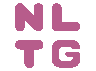
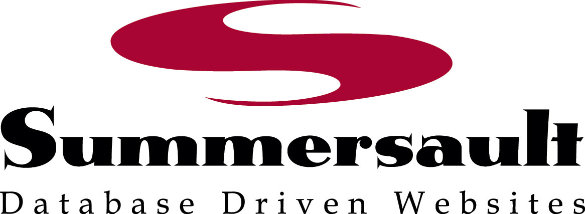

Distributed. Interactive. Smart.
We would like to thank the following people and organisations for supporting the Darcs project.
 NLTG, University of Brighton (since 2008) - The University of Brighton (NLTG group) allocate part of Eric Kow's research time to the Darcs project. This helps us to take on vital project maintainence tasks, such as organising regular programming events.
 Haskell.org (2007, 2009)
regularly participate in the Google Summer of Code program. Through
haskell.org, the Darcs Team was able to work on two summer of code
projects in 2007 and 2009. This work allowed us to make progress on
the Darcs 2 formalism and optimisations to the Darcs repository
format. We are grateful to both Google and Haskell.org for this
great opportunity to improve Darcs.
Haskell.org (2007, 2009)
regularly participate in the Google Summer of Code program. Through
haskell.org, the Darcs Team was able to work on two summer of code
projects in 2007 and 2009. This work allowed us to make progress on
the Darcs 2 formalism and optimisations to the Darcs repository
format. We are grateful to both Google and Haskell.org for this
great opportunity to improve Darcs.
OSUOSL (Oregon State University Open Source Lab) provide free hosting for key infrastructure including our website, wiki and bugtracker. Technical support from OSUOSL is always swift and friendly.
SFC (since 2009) - Darcs is a member of the Software Freedom Conservancy, a US tax-exempt 501(c)(3) organization. Membership in the SFC allows us to benefit from a formal legal structure, while staying focused on making Darcs great. Thanks very much to the people behind the Conservancy for this invaluable support to Free software development.
Buildbot - Thanks to people and organisations who have provided us with support for the Darcs buildbot.
The Darcsit team - We are happy users of the darcsit wiki engine. Thanks to the darcsit team for their patient and helpful suppport.
Moritz Lenz has kindly agreed to run and host the Darcs IRC logs using his most excellent ilbot. Thanks, Moritz!
We would like to thank everybody who has made a donation to the Darcs Project. We use these funds for to help Darcs hackers travel to hacking sprints, which makes them more viable and lively. Below, we would like to say a special word of thanks to some of our donors for their particularly generous assistance.
 Summersault (2010) is based in Richmond, Indiana. They offer "a single point of contact for highly customized web design, web development, and application development solutions, as well as professional consulting services and support". In addition to their donation, they offered us the following testimonial:
Summersault has used Darcs for a number of years now to manage various website development projects, and we've found it to be an invaluable tool for our staff. We appreciate all that the Darcs project does for software developers everywhere..
Weebly (2010) is a "California based company that was founded in 2006 with the mission to help people put their information online quickly and easily". Along with their donation, they wrote to us saying
We love Darcs for its simplicity of choosing which patches to push, and being able to record simple changes without spawning off a new repo. It's taken us a bit of time to get used to, but once you get the hang of it, there's definitely no going back!
PatchSpace (2009) is an Agile consulting company that "helps teams get maximum productivity from agile practices, such as test-driven development". They added that
Darcs is a source control system that really adds value. It enables flexible workflows, which encourages experimentation. Its interface is interactive and intuitive, which lets you focus on writing software, not merging changes and editing config files. Darcs is especially suited to small, collaborative teams.
Last, but not least, thanks very much to everybody in the Darcs community, for using Darcs, giving us your feedback, your patches and your support!
Glasgow Haskell Compiler (GHC) team: We would like to thank the GHC team for using Darcs, providing us with reports and development advice.
Hacking Sprints - Many thanks to the following organisations for hosting our regular Darcs Hacking sprints. These events are very important to us, as they help to not just to get work done but also to bond as a team.